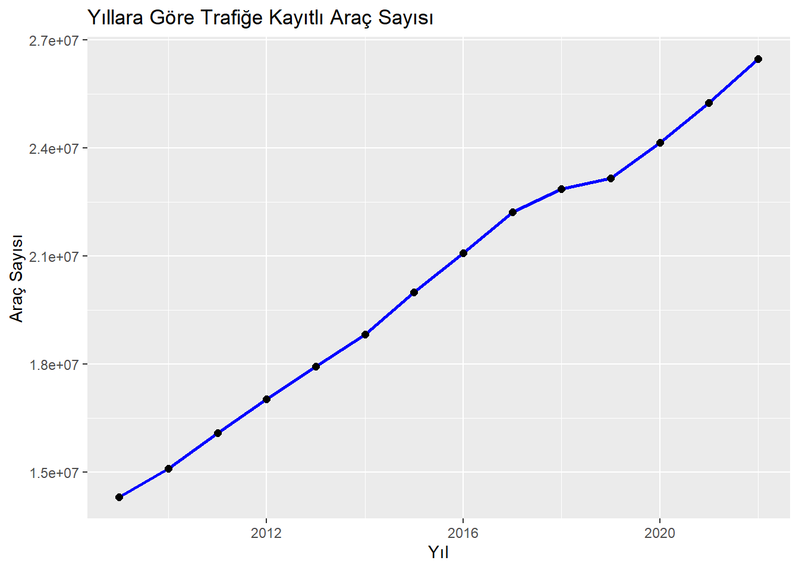

Kodu görüntüle
# Gerekli Kütüphaneler
#install.packages("tidyverse") # Veri işleme ve görselleştirme
#install.packages("readxl") # Excel dosyalarını okuma
#install.packages("ggplot2") # Görselleştirme
#install.packages("gridExtra") # Görselleştirme (subplot)
library(tidyverse)── Attaching core tidyverse packages ──────────────────────── tidyverse 2.0.0 ──
✔ dplyr 1.1.4 ✔ readr 2.1.5
✔ forcats 1.0.0 ✔ stringr 1.5.1
✔ ggplot2 3.5.1 ✔ tibble 3.2.1
✔ lubridate 1.9.3 ✔ tidyr 1.3.1
✔ purrr 1.0.2
── Conflicts ────────────────────────────────────────── tidyverse_conflicts() ──
✖ dplyr::filter() masks stats::filter()
✖ dplyr::lag() masks stats::lag()
ℹ Use the conflicted package (<http://conflicted.r-lib.org/>) to force all conflicts to become errorsKodu görüntüle
library(readxl)
library(ggplot2)
library(gridExtra)
Attaching package: 'gridExtra'
The following object is masked from 'package:dplyr':
combineKodu görüntüle
# Veriyi okuma
total_2009_2022 <- read_excel("trafige_kayitli_arac_kaza_olu_ve_yarali_sayisi_2009_2022.xls")
iller_2022 <- read_excel("illere_gore_trafik_kaza_olu_ve_yarali_sayisi_2022.xls")
iller_2021 <- read_excel("illere_gore_trafik_kaza_olu_ve_yarali_sayisi_2021.xls")
kusurlar_2022 <- read_excel("olumlu_yaralanmali_kazaya_neden_olan_kusurlar_2022.xls")
kusurlar_2021 <- read_excel("olumlu_yaralanmali_kazaya_neden_olan_kusurlar_2021.xls")
# Veri (sütun) isimlerini R tarafından okunabilir şekilde düzünleme
names(total_2009_2022) <- make.names(names(total_2009_2022), unique = TRUE)
names(iller_2022) <- make.names(names(iller_2022), unique = TRUE)
names(iller_2021) <- make.names(names(iller_2021), unique = TRUE)
names(kusurlar_2022) <- make.names(names(kusurlar_2022), unique = TRUE)
names(kusurlar_2021) <- make.names(names(kusurlar_2021), unique = TRUE)
# Türkiye'nin coğrafi bölgelerine göre şehirlerin listesini oluşturma
turkiye_bolgeler <- list(
"Marmara" = c("İstanbul", "Kocaeli", "Bursa", "Balıkesir", "Çanakkale", "Yalova", "Bilecik", "Edirne", "Kırklareli", "Tekirdağ", "Sakarya"),
"Ege" = c("İzmir", "Aydın", "Muğla", "Manisa", "Denizli", "Uşak", "Afyonkarahisar", "Kütahya"),
"Akdeniz" = c("Antalya", "Mersin", "Adana", "Hatay", "Isparta", "Burdur", "Osmaniye", "Kahramanmaraş"),
"İç Anadolu" = c("Ankara", "Konya", "Eskişehir", "Kayseri", "Nevşehir", "Kırşehir", "Aksaray", "Kırıkkale", "Yozgat", "Niğde", "Karaman", "Sivas", "Çankırı"),
"Doğu Anadolu" = c("Van", "Erzurum", "Ağrı", "Malatya", "Bingöl", "Elazığ", "Tunceli", "Erzincan", "Muş", "Hakkari", "Iğdır", "Ardahan", "Bitlis", "Şırnak", "Kars"),
"Güneydoğu Anadolu" = c("Diyarbakır", "Şanlıurfa", "Gaziantep", "Mardin", "Adıyaman", "Kilis", "Batman", "Siirt"),
"Karadeniz" = c("Zonguldak", "Bartın", "Karabük", "Kastamonu", "Sinop","Samsun", "Ordu", "Giresun", "Trabzon", "Rize", "Artvin", "Bolu", "Çorum", "Tokat", "Amasya", "Bayburt", "Gümüşhane", "Düzce")
)
# Şehirleri bölgelere göre ayırma (fonksiyon)
bolge_bolme <- function(province) {
bolge <- NA
for (bolge_adi in names(turkiye_bolgeler)) {
if (province %in% turkiye_bolgeler[[bolge_adi]]) {
bolge <- bolge_adi
break
}
}
return(bolge)
}
# Fonksiyonu listelere uygulama
iller_2021$Region <- sapply(iller_2021$X.Province, bolge_bolme)
iller_2022$Region <- sapply(iller_2022$X.Province, bolge_bolme)
# Verinin kısa özeti
head(total_2009_2022, 14) # İlk birkaç satırı inceleme# A tibble: 14 × 9
Year Number.of.vehicles.regi…¹ Total.number.of.acci…² Number.of.accidents.…³
<dbl> <dbl> <dbl> <dbl>
1 2009 14316700 1053346 111121
2 2010 15095603 1106201 116804
3 2011 16089528 1228928 131845
4 2012 17033413 1296634 153552
5 2013 17939447 1207354 161306
6 2014 18828721 1199010 168512
7 2015 19994472 1313359 183011
8 2016 21090424 1182491 185128
9 2017 22218945 1202716 182669
10 2018 22865921 1229364 186532
11 2019 23156975 1168144 174896
12 2020 24144857 983808 150275
13 2021 25249119 1186353 187963
14 2022 26482847 1232957 197261
# ℹ abbreviated names: ¹Number.of.vehicles.registered.to.traffic,
# ²Total.number.of.accidents, ³Number.of.accidents.involving.death.or.injury
# ℹ 5 more variables: Number.of.accidents.involving.material.loss.only <dbl>,
# Number.of.persons.killed.total <dbl>,
# Number.of.persons.killed.at.accident.scene <dbl>,
# Number.of.persons.killed.accident.follow.up <chr>,
# Number.of.persons.injured <dbl>Kodu görüntüle
# Line Plot - Araç Sayılarının Yıllara Göre Değişimi
ggplot(total_2009_2022, aes(x = Year, y = Number.of.vehicles.registered.to.traffic, group = 1)) +
geom_line(color = "blue", size = 1) +
geom_point(size = 2) +
labs(title = "Yıllara Göre Trafiğe Kayıtlı Araç Sayısı", x = "Yıl", y = "Araç Sayısı")Warning: Using `size` aesthetic for lines was deprecated in ggplot2 3.4.0.
ℹ Please use `linewidth` instead.